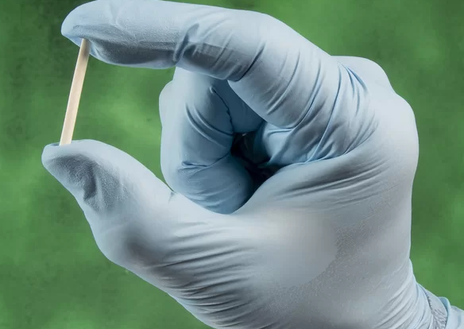

Café e produtividade: Por que a bebida é indispensável no escritório?
Postado em 21 abril 2023
Que o café é uma presença constante em qualquer ambiente de trabalho, já é fato. Afinal, não são poucos os que não começam o dia sem uma xícara caprichada da bebida! Mas ficam as dúvidas: como nasceu a relação entre café e trabalho e, mais importante, como o momento para o cafezinho influencia na produtividade dos funcionários?
Leia maisApós Fluminense 1 x 0 The Strongest, Diniz diz: "Vamos ser campeões por causa da defesa"
Postado em 20 abril 2023O Fluminense divulgou nesta quinta-feira o vídeo dos bastidores da vitória por 1 a 0 sobre o The Strongest, da Bolívia, na última terça no Maracanã, pela Libertadores. As imagens mostram o clima no vestiário antes e depois do jogo e os discursos de Felipe Melo e do técnico Fernando Diniz enaltecendo a atuação da equipe, que apesar do placar magro praticamente não levou perigo.
Leia maisFerrari lança modelo híbrido de conversível 296 GTS
Postado em 19 abril 2023A Ferrari apresentou nesta terça-feira (19) o novo conversível 296 GTS, seu quarto modelo híbrido plugin, com a fabricante de carros esportivos de luxo avançando na estratégia de eletrificação.
Leia maisChip da beleza: o que é e quais os riscos para a saúde.
Postado em 18 abril 2023 Você já deve ter ouvido falar do chamado "chip da beleza". Como o nome já indica, a fórmula promete milagres na aparência de quem adere: melhores noites de sono, mais disposição para se exercitar – e, consequentemente, mais massa magra –, redução dos sintomas da TPM, pele mais firme, menos celulites e aumento da libido.
Leia mais